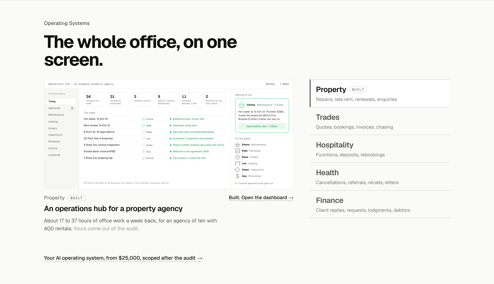
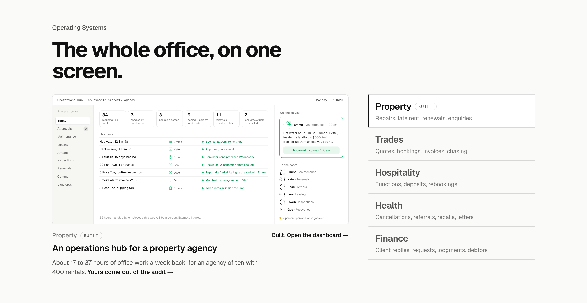
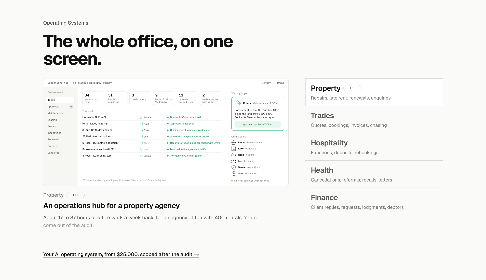

Operating Systems: the close three ways
Detail 4 of 5. The section with the heading, the industry-first list and the one-sentence line in place, Property active; only the links change. Every other section closes on a link; this one has a link per screen and none for the section.
TodayOne link per screenEach industry’s link sits beside its name under the screen: “Built. Open the dashboard” for Property, “See the Trades page” for the rest. The section as a whole closes on nothing.

1. The rungA line under the list: from $25,000, scoped after the auditThe section closes on the ladder’s third rung and its price, to the pricing page; the per-screen links stay. Says what this costs where the AI Employees section says what that costs. Recommended.

2. The audit, from the lineThe tag under the screen becomes the link“Yours come out of the audit” turns into the link, to the audit booking. The close is the next step the line already names; the per-screen links stay and the list carries nothing.

3. One close onlyThe rung line under the list, and no per-screen linkThe rung line as in 1, with the per-screen links removed so the section has one way out. Cleaner; loses the open link to the built dashboard from the homepage.
